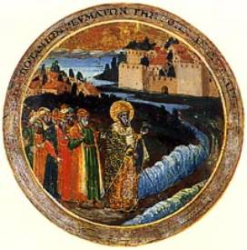

Sources on St. Nicholas Through the Ages
Actual biographic data on Nicholas is severely
limited. Although he lived in the fourth century, the records of his life and
miracles – at least those records that have remained intact – only began to
accumulate from the sixth century onward. To what degree these are based on
earlier writings or oral traditions is hardly ever clear. The various Vitae (life stories) of St. Nicholas
borrow heavily from each other.
Historians readily admit that the seventh and eighth
centuries in the East were “dark ages,” so little have they left us in the way
of writings; we have nothing from them about St. Nicholas. But, on the other
hand, the ninth and tenth centuries give us an abundance of documents about
him. He was venerated throughout the Christian Church at that time. Calendars
put his name to the sixth of December.
Many people wrote about the life of St. Nicholas
throughout the ages. This appears to be the order of the main writings:
Archimandrite Michael (ninth century): His Vita Per Michaëlem is said to be the earliest of all the biographies of St. Nicholas. The author says that others have written about St. Nicholas before him, but it’s clear from his text that no complete biography existed before his time; still, at least partial accounts must, in fact, have been written. Michael also refers to an oral tradition he received from a monk. His work is punctuated by moral and theological considerations.
Methodius (ninth century): The oldest known account of
the life of St. Nicholas is by Methodius, Bishop of Constantinople, 842 to 846 AD, who wrote a Laudatioi Sancti Nicolai contained in Membrano Cod. Vatic., No. 824, fol. 151.
There can be no doubt about the antiquity of his
following, which was clearly established in the East from the 6th century,
increased by a biography by Methodius (d. 847), and became widely known in the
West in the 10th century.
This is not for lack of material, beginning with the
life attributed to the monk who died in 847 as St. Methodius, Patriarch of
Constantinople. But he warns us that “Up to the present the life of this
distinguished Shepard has been unknown to the majority of the faithful”, and
sets about enlightening their ignorance nearly five hundred years after the
saint’s death. This is the least unreliable of the “biographical” sources
available, and a vast amount of literature, critical and expository, have grown
up around them. Nevertheless, the universal popularity of the saint for so many
centuries requires that some account of these legends should be given here.
Johannes Diaconus (ninth century): This is the first Latin
biography of St. Nicholas. It’s based largely on the letter from Methodius to
Theodore. As the Vita by Johannes Diaconus became known outside of Italy, other
Latin Lives of St. Nicholas were based upon it. The earliest of these is that
by Reginold, bishop of Eichstaett from 966 to 991. From about the same period
are three hymns in a MS from Montecassino.
In 880, Johannes Diaconus of Naples wrote the first
Latin biography of Nicholas based on Greek texts.
This and the Vita
Per Metaphrasten (next) were to be the chief sources for all later western
biographies. John, a ninth century chronicler, is one of the best-known
compilers and elaborators of the St. Nicholas legends.
Simeon Logotheta Metaphrastes (tenth century): Simeon collected the lives
of the Saints from oral traditoin and written collections. He copied some lives
as written and rewrote others. He arranged the lives in the order of the
Saints’ feast days, and his work became so popoular that many earlier
hagiography has been lost. His Vita Per
Metaphrasten was the last
classical Greek text on the life of St. Nicholas. It drew upon the Vita Per Michaëlem and the Laudatioi Sancti Nicolai by Methodius.
This biography was the most widely read and, in fact, became the generally
accepted and, so to speak, canonical
text on St. Nicholas. It was one of the chief sources for all later Western
biographies.
Robert Wace (or Guace) (eleventh or twelfth
century):
A very early, and perhaps, the earliest
life of Nicholas written in French was by Wace, one of the very earliest Norman
poets who wrote of national heroes. Few provinces were so fortunate as Normandy
in having an early historian of such talent as Wace. His great importance is
due to the fact that instead of writing in Latin like the other educated men of
his day, he was among the first and ablest to introduce the vernacular. This
gained for him a much larger audience. The evidence points clearly to the fact
that Johannes Diaconus, rather than Methodius, was the chief source from which
Wace drew his material for the life of St. Nicholas.
Not only was Hilarius (1079-1142), the earliest known
author of a Latin play on St. Nicholas, a Norman, but a very early, and
perhaps, the earliest life of the saint written in french was by Guace, or
Wace, one of the very earliest Norman poets who wrote of national heroes; the
most important of his other religioius writings was “La conception Nostre Dame,
dicte Feste aux Normans” which deals with a church festival, the celebration of
which originated in Normandy.
The first non-classical biography of Nicholas was
written by the great Norman poet Wace (c. 1100-1174), who recorded the legends
in Old French during the middle of the twelfth century. This work, in turn, was
expanded and translated into Old English by Nicholas Delius.
Hilarius (twelfth century): Hilarius, a wandering
Norman scholar and pupil of Abelard, was the earliest known author of a Latin
play on St. Nicholas: The Barbarian and
the St. Nicholas Icon. His drama must have held particular appeal for the
common people, since it combined the language of the locals, French, with the
language of the Church, Latin.
The Barbarian
and the St. Nicholas Icon has been ascribed to Hilarius, a wandering scholar, whose works
comprise a number of poems and three plays. His drama must have held particular
appeal for the common people, since it combined the language of the locals,
French, with the language of the Church, Latin.
Hildesheim and Fleury (twelfth or thirteenth
century):
Plays from the life of St. Nicholas. The Hildesheim plays are apparently
earlier than the Fleury plays.
The quote is taken from a thirteenth-century
manuscript that once belonged to the Benedictine monastery of Fleury, France,
and which now resides in the public library in Orléans.
This play became known as the Tres filiae, of which one text survives from the German town of
Hildesheim (eleventh or twelfth century) and one from the French Benedictine
monastery of Fleury.
Jean Bodel (twelfth or thirteenth century): By far the most elaborate
and the best-known treatment of the legend of the barbarian and the icon of St.
Nicholas is the Jeu de St Nicolas of
Jean Bodel. Here the barbarian has become a pagan king and the setting is the
Crusades. To be sure, the tavern scenes are more suggestive of the everyday
life of Arras than they are in keeping with the miraculous intervention of the
Saint, but the theme of the Iconia
remains essentially the same. Bodel depended heavily on both the Fleury and
Hilarius plays for his material.
In the opinion of one critic, Jean Bodel, the author
of “Le Jeu St. Nicholai,” at the end of the twelfth century, wrote under Norman
influence. There was much in the accounts of the life of St. Nicholas that
presneted a peculiar appeal to the Normans. Many of the saint’s miracles were
performed at sea, or in behalf of sialors, and he was held in such reverence by
the Normans, a sea-faring people, that he became the patron saint of sailors.
The nuaitcal voacabulary employed by Wace in his life of St. Nicholas, his
descriptions of storms at sea, and the many journeys to which references are
made, journeys in almost every instance by ship, must have had an uncommon
interest to people familiar with the sea.
Jacobus de Voragine (thirteenth century): Jacobus de Vorgine was the
archbishop of Genoa. His The Golden
Legend (Aurea Legenda) (circa 1260) was
the most popular collection of lives of the Saints during the Middle Ages.
About 900 manuscripts of his Golden Legend survive. From 1470 to 1530 it was
also the most often printed book in Europe.
Jos. Simon Assomane (eighteenth century): Jos. Simon Assomane
published a life of St. Nicholas from Methodius and other sources in Kalendaria Ecclesiae Universae, Rome,
1755. The Life of St. Nicholas is in
Vol. V, p. 419.
Others wrote about him too, basing themselves
chiefly on Archimandrite Michael, but they improvised on the miracles a good
deal. There were biographies and eulogies, sermons, stories of the miracles, hymns
and poems. Some are anonymous, others signed by, or attributed to, well-known
authors. To mention a few in passing, there is the Passionale by Konrad von Würzburg, the English and Scottish Legendaries, and The Legend of St. Nicholas by Beulah Marie Dix.
The most comprehensive coverage, the Vita Compilata, sought to include all
known facts on St. Nicholas and contains data, such as the names of his
parents, not recorded elsewhere.
Any given detail we are told about St. Nicholas may
or may not correspond with historical reality. While we do not deny the
possibility of miracles, it is up to us which of these particular miracles we
accept. There is no incontestable evidence for the truth of the details of his
life and miracles.
We must also mention another Latin Vita belonging to
this period written by the monk Otloh, of the monastery of St. Emmeram in
Regensburg, between 1060 and 1062, and a complete Historia or office for St.
Nicholas’ Day, with music. The latter exists in 11th century manuscripts from
Evreux and St. Maur-les-Fossés. These manuscripts
correspond closely to the 12th century version from Worcester and to the Sarum
use. This office is probably one written in Rouen about 1030, which had a wide
circulation in Normandy. In addition to the foregoing, a number of hymns have
come down from the 11th century, most of which are to be found in several
manuscripts.
Thought to Ponder:
Thought to Discuss around the Dinner Table:
Sources on St. Nicholas Through the Ages
